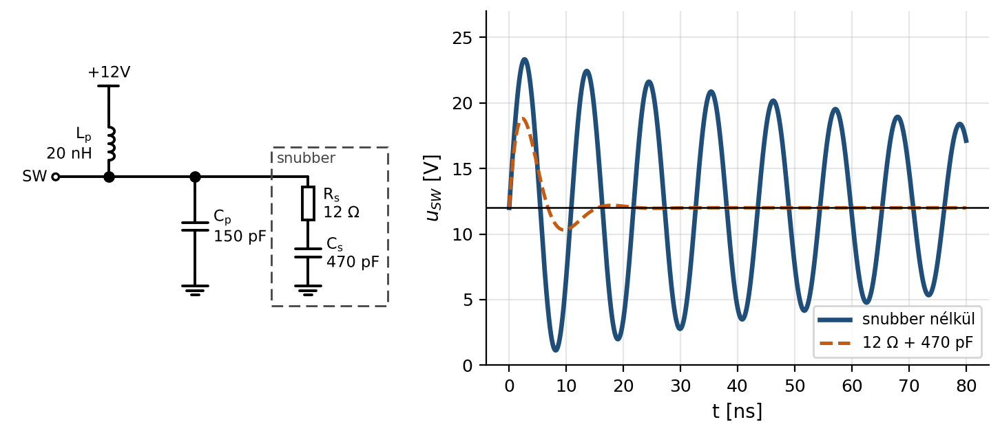
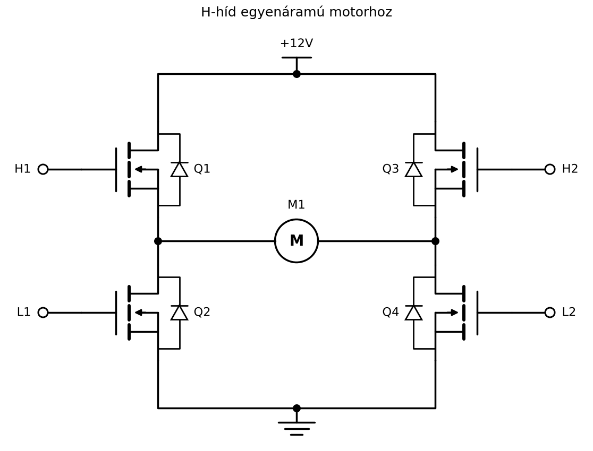

Ebben az alfejezetben a MOSFET határait tanulod meg: hogyan ellenőrzöd egy munkapontot vagy impulzust az SOA-diagramon, hogyan számolod ki egy induktív terhelés lekapcsolásakor elnyelendő energiát és választasz hozzá fogóáramkört, és miért kell holtidő egy félhídban.
A szenzormodul szolenoidján két ötlet merül fel. Az egyik: a bekapcsolási áramlökés ellen lassítsuk le a gate felfutását egy kondenzátorral, hogy a MOSFET néhány tíz milliszekundum alatt nyisson ki. A másik: a gyorsabb elengedésért hagyjuk el a szabadonfutó diódát, a MOSFET majd „elviseli” a visszarúgást. Mindkettő olyan állapotba viszi a tranzisztort, ahol az és a számítás semmit nem mond. Meg kell tudnod mondani, hogy túléli-e.
Az SOA mint térkép. Rajzoljuk a feszültséget a vízszintes, az áramot a függőleges tengelyre. Minden pillanatnyi állapot egy pont. A biztonságos működési tartomány (SOA, safe operating area) az a terület, ahol a tranzisztor nem károsodik – de a határa attól függ, meddig marad ott. Egy 100 µs-os impulzus alatt a chip alig melegszik, ugyanaz a pont tartósan elégetné.
Az induktivitás mint lendkerék. A tekercs árama nem ugorhat: a kapcsoló nyitásakor az áram mindenképp talál utat, és addig emeli a feszültséget, amíg talál. A tekercsben tárolt energia () valahol hővé válik. A tervező dolga: előre kijelölni az utat. Minél nagyobb ellenfeszültséget állítunk az áram útjába, annál gyorsabban fékeződik le, de annál nagyobb feszültséget lát a kapcsoló.
Definíció. Az SOA-diagram az adatlapon a megengedett pontokat adja egyszeri impulzusra, különböző impulzushosszakra, = 25 °C tokhőmérsékletre. Mindkét tengelye logaritmikus.
Négy határ veszi körül:
Hőmérséklet-korrekció. Ha a tok melegebb 25 °C-nál, a hőhatárt arányosan csökkentjük (egyszerű, gyakori közelítés):
150 °C-os határnál 60 °C-os tokra a szorzó . A a tok hőmérséklete: kis SMD tok a panelen lassan melegszik fel a környezet fölé, hosszú impulzusnál ezért a hőellenállás (, illetve a tranziens hőimpedancia, Hőtervezés és vezetőmelegedés) sokkal szigorúbb lehet az SOA DC-görbéjénél: a 60 °C-os környezetben a tok tartósan csak W-ot ad le.
Mikor kerül a kapcsoló a lineáris tartományba? Minden kapcsolásnál rövid időre (az ábra C pontja: a néhány száz nanoszekundumos kapcsolási átmenet bőven a 100 µs-os görbe alatt marad); lassított gate-felfutásnál, lágyindításnál, áramkorlátozásnál, zárlatnál hosszan. Ekkor a pontot vagy a pálya legrosszabb pontját az időtartamnak megfelelő görbéhez kell mérni.
Ha a drain feszültsége eléri a letörési feszültséget, az eszköz
lavinaletörésbe kerül: vezet, és a feszültséget
nagyjából ott tartja. Sok adatlap megadja, hogy ez mennyi energiáig nem
károsít:
egyszeri impulzusra (meghatározott kezdő hőmérsékletnél, induktivitásnál
és áramnál),
ismétlődőre (adatlapfüggő). A lavina szükséghelyzeti
tartalék, tervezett fogóként csak akkor használható, ha az adatlap
megengedi, és az energiát hőmérséklettel korrigálva ellenőrizted.
Lekapcsolás után a tekercsre a fogóelem ellenfeszültsége és a saját ellenállása hat:
Megoldása az RC és RL töltés–kisütés, időállandó mintájára; az áram nullára fogy ennyi idő alatt:
| Módszer | Drain-csúcs | A fogóban hővé váló energia () | |
|---|---|---|---|
| szabadonfutó dióda | (a valóságban nagy része -ben) | ||
| dióda + soros Zener | |||
| TVS a drain és a föld között | |||
| MOSFET lavinája | mint a TVS, de a tranzisztorban |
A drain–föld fogónál (TVS, lavina) a lekapcsolás alatt a táp is átnyomja az áramot a fogón, ezért annak több energiát kell elnyelnie a tekercsben tároltnál. Egység-ellenőrzés: .
A relé (30 mA, 180 µJ, ahogy A BJT mint
kapcsoló alfejezetben) diódával 2,90 ms alatt veszíti el az áramát,
6 mA-nél (elengedés, mintaadat) 1,41 ms-nál tart. Dióda + 15 V Zenerrel
0,57 ms, a csúcs 27,7 V. (Az elkit Zener-alapértéke 24 V;
itt és a kódban 15 V-ot adunk meg.) A Zener gyorsabb elengedést és
kisebb érintkezőkopást ad.
PWM-nél más a helyzet. 20 kHz-es PWM-ben a szolenoid árama a kikapcsolt szakaszban alig csökken ( = 1,7 ms, az 50 µs-os periódushoz képest hosszú), ezért a kikapcsolt idő egészében a fogón folyik. 36 V-os TVS-sel ez W, diódával W. PWM-hez a fogó diódás (vagy szinkron) szabadonfutás kell; a gyors, feszültséges fogás csak a végső lekapcsoláskor legyen aktív (például külön kapcsolóval).
A hurok parazita induktivitása () és a drain-csomópont kapacitása () lekapcsoláskor rezgőkört alkot: a feszültség cseng, túllő, zavart sugároz. Az RC-snubber (soros R–C a csomópont és a föld közé) csillapítja. Kiinduló értékek (hüvelykujjszabály, méréssel finomítandó):

A snubber nem a tekercs energiájának fogója, csak a parazita csengést csillapítja.
Ha egy MOSFET kevés, kettőt kötnek párhuzamosan. Teljesen bekapcsolva a pozitív hőfoktényező kiegyenlít: a melegebb eszköz ellenállása nő, árama csökken. Kapcsoláskor és lineáris üzemben viszont nem: az alacsonyabb küszöbű eszköz előbb nyit, később zár, és melegen a küszöbe tovább csökken. Ezért eszközönként külön gate-ellenállás, szimmetrikus bekötés és azonos hűtés kell (kényszerként rögzítve), lineáris üzemben pedig a párhuzamosítás nem megoldás.
Definíció. A félhíd két, a táp és a föld közé sorba kötött kapcsoló, közös kimenettel (SW). A H-híd két félhíd, a terhelés a két kimenet között: mindkét irányú árammal hajthatja a motort.

Keresztvezetés (shoot-through): ha egy félhíd mindkét kapcsolója egyszerre vezet, a táp a két bekapcsolt ellenálláson és a parazita hurkon át rövidre zárul. Ok: a kikapcsolás tovább tart, mint a bekapcsolás elindulása. Védekezés a holtidő (dead time): a két vezérlőjel között mindkettő alacsony. A legkisebb holtidő a gate-töltés modelljéből: a kikapcsolás teljes ideje (késleltetés, plató, áramesés) mínusz a bekapcsolási késleltetés. Az előző alfejezet meghajtójával (5 V, 12 Ω) ez kb. 37 ns, közvetlen GPIO-meghajtással (150 Ω) 345 ns – plusz tartalék a szórásra.
A holtidő alatt a terhelőáram nem tűnik el: egy test-diódán keresztül folyik tovább (az áram irányától függ, melyiken). A dióda nagyobb feszültsége veszteséget ad, periódusonként két holtidőre . A holtidő tehát se rövid, se fölöslegesen hosszú ne legyen. A kész félhíd-meghajtó IC-k beépített vagy beállítható holtidőt és keresztvezetés elleni reteszelést adnak.
Továbbvitt eredmény. SOA-ellenőrzés: a legrosszabb pont az impulzushosszhoz tartozó görbe alatt, -re korrigálva, és a kártya hőmérsékletével is ellenőrizve – ezt Az adatlap olvasása, Hőtervezés és vezetőmelegedés és a 3. záróprojekt: MOSFET-es meghajtó induktív terheléshez használja. Az induktív fogás (dióda lassú és takarékos, Zener/TVS gyors, de disszipál; ) az ESD- és túlfeszültség-védelem az áramkörben és a 3. záróprojekt: MOSFET-es meghajtó induktív terheléshez része. A keresztvezetés és a holtidő A buck konverter és a Hatásfok, veszteségek, alkatrészválasztás és kapcsolóüzemű zaj alfejezetben tér vissza.
1. Lágyindítás (A pont). Lassú gate-felfutásnál a MOSFET végigmegy a terhelési egyenesen, . A legnagyobb teljesítmény félúton van: = 6 V, = 0,5 A, = 3 W. = 60 °C.
2. A szolenoid végső lekapcsolása (12 V, 12 Ω, 20 mH, = 1 A, = 10 mJ):
Döntés: PWM-hez DS1 Schottky-dióda; ha a gyors elengedés követelmény, a Zeneres ág és a tranziens egyeztetése.
from elkit import power as pw, devices as dv, units
for u, i, t_p in ((6.0, 0.5, 10e-3), (6.0, 0.5, 0.1), (0.06, 1.0, 0.1), (12.0, 1.0, 1e-3)):
r = pw.soa_check(u, i, t_p=t_p, t_c=60.0)
print(f"{u:5.2f} V {i} A {units.fmt(t_p, 's'):>6}: I_max = {units.fmt(r.i_max, 'A'):>7} "
f"({r.limit}), {100 * r.utilization:.0f} % -> {'ok' if r.ok else 'TÚL'}") 6.00 V 0.5 A 10 ms: I_max = 960 mA (teljesítmény), 52 % -> ok
6.00 V 0.5 A 100 ms: I_max = 300 mA (teljesítmény), 167 % -> TÚL
0.06 V 1.0 A 100 ms: I_max = 1.04 A (R_DS(on)), 96 % -> ok
12.00 V 1.0 A 1 ms: I_max = 1.47 A (teljesítmény), 68 % -> okA teljesen bekapcsolt pontnál az -egyenes az „aktív korlát” – ez nem veszély, az eszköz egyszerűen nem tud több áramot adni ennyi feszültségnél.
for method, kw in (("dióda", {}), ("dióda+zener", {"u_z": 15.0}), ("tvs", {}), ("lavina", {})):
r = pw.turn_off(method, u_supply=12.0, l=20e-3, r=12.0, **kw)
print(f"{method:12s} csúcs {r.u_switch_peak:4.1f} V t0 = {units.fmt(r.t_zero, 's'):>8} "
f"fogóban {units.fmt(r.e_clamp, 'J'):>8}")
from elkit import extra_elch14 as x14
sw = pw.gate_switching(dv.MN1, 12.0, 1.0, 5.0, 12.0)
dt = x14.dead_time(sw)
print(f"legkisebb holtidő: {units.fmt(dt.minimum, 's')}")
for t_d in (0.0, 100e-9):
st = x14.shoot_through(x14.overlap_time(dt, t_d))
p_st = 2 * st.energy * 500e3
p_d = x14.body_diode_loss(1.0, t_d, 500e3)
print(f"t_holt = {units.fmt(t_d, 's'):>6}: csúcs {st.i_peak:.1f} A, "
f"keresztvezetés {units.fmt(p_st, 'W')}, dióda {units.fmt(p_d, 'W')}")dióda csúcs 12.7 V t0 = 4.83 ms fogóban 969 µJ
dióda+zener csúcs 27.7 V t0 = 946 µs fogóban 6.73 mJ
tvs csúcs 36.0 V t0 = 676 µs fogóban 11.3 mJ
lavina csúcs 45.0 V t0 = 517 µs fogóban 11 mJ
legkisebb holtidő: 36.8 ns
t_holt = 0 s: csúcs 20.2 A, keresztvezetés 4.6 W, dióda 0 W
t_holt = 100 ns: csúcs 0.0 A, keresztvezetés 0 W, dióda 80 mWHoltidő nélkül 500 kHz-en 4,6 W veszteség és a 16 A-es fölötti áramcsúcs keletkezik; 100 ns holtidővel csak 80 mW dióda-veszteség.
A1. Egy 24 Ω-os, 100 mH-s szelep 0,5 A-t visz. Mekkora a tárolt energia, és mennyi idő alatt fogy el az áram szabadonfutó diódával ( = 0,7 V)?
A2. MN1, = 20 V, = 0,5 A, 1 ms-os egyszeri impulzus, = 100 °C. Megengedett-e? (1 ms-os görbe 20 V-on: 1,15 A.)
B3. A relé (400 Ω, 0,4 H, 12 V) áramának 0,5 ms alatt kell elfogynia dióda + Zener fogással. Válassz E24-es Zenert, és ellenőrizd a 32 V-os drain-határt a 16 V-os legnagyobb bemenetnél. Mit javasolsz?
B4. Egy félhíd 200 kHz-en 2 A-t kapcsol, a holtidő 150 ns, = 0,8 V. Mekkora a dióda vesztesége?
B5. Egy csomópontnál = 50 nH, = 200 pF. Add meg a snubber E-soros kiinduló értékeit, és számold ki az ellenállás teljesítményét 12 V-on, 20 kHz-en és 2 MHz-en.
C6. (Programozás) A lassított bekapcsolás 30 ms
alatt viszi végig a szolenoid terhelési egyenesét
(
12 V-ról 0,1 V-ra). Írj kódot, amely
= 60 °C-on megkeresi a legkritikusabb pontot a
power.soa_check_waveform függvénnyel.
Az SOA-diagram megmondja, mely pont bírható ki adott impulzushosszra; az -, áram-, hő- és feszültséghatár alatt, a tokhőmérsékletre korrigálva, kis tokban hőimpedanciával is ellenőrizve kell maradni. A lineáris üzem nagy feszültségen termikusan instabil. A lavina csak adatlapi energiakorláttal használható. Induktív lekapcsolásnál : a dióda lassú és takarékos, a Zener/TVS gyors, de disszipál; PWM-hez diódás szabadonfutás kell. Az RC-snubber a parazita csengést csillapítja. Félhídban a holtidő akadályozza a keresztvezetést; alatta a test-dióda vezet, ezért se túl rövid, se fölöslegesen hosszú ne legyen. Párhuzamosított MOSFET-ek a teljes bekapcsolásban jól osztoznak az áramon, kapcsoláskor és lineáris üzemben viszont nem.
A1. mJ. ms, ms.
A2. Korrekció: ; A. A 0,5 A ennél nagyobb (109 %): nem megengedett.
B3. ms → → V, V → E24: 18 V ( = 18,7 V, ms). Névlegesen a csúcs 30,7 V, de 16 V-on 34,7 V 32 V. A követelmény és a tartalék ütközik: magasabb feszültségű (például 60 V-os) MOSFET, vagy az idő-követelmény átbeszélése.
B4. mW.
B5. → 15 Ω; pF → 560 pF (E12). : 20 kHz-en mW; 2 MHz-en 161 mW – ez már valódi hő, és a hatásfokot is rontja.
C6.
import numpy as np
u = np.linspace(12.0, 0.1, 500)
i = (12.0 - u) / 12.0
w = pw.soa_check_waveform(u, i, t_p=30e-3, t_c=60.0)
print(f"legkritikusabb pont: {w.u_ds:.1f} V, {units.fmt(w.i_d, 'A')}, "
f"határ {units.fmt(w.i_max, 'A')} ({100 * w.utilization:.0f} %)")legkritikusabb pont: 6.0 V, 501 mA, határ 552 mA (91 %)91 % kihasználtság mellett formailag megfelel, de tartalék alig van, és a számítás a teljes 30 ms-ot a legrosszabb ponthoz rendeli (óvatos közelítés). A kis tok hőimpedanciája ennyi idő alatt már jelentős: rövidebb felfutás vagy nagyobb tok indokolt. Itt a legkritikusabb pont egybeesik a legnagyobb teljesítményűvel (6 V), de nagy feszültségű, meredekebb SOA-szakaszon ez nem törvényszerű.